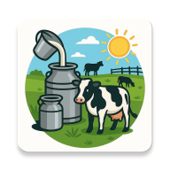
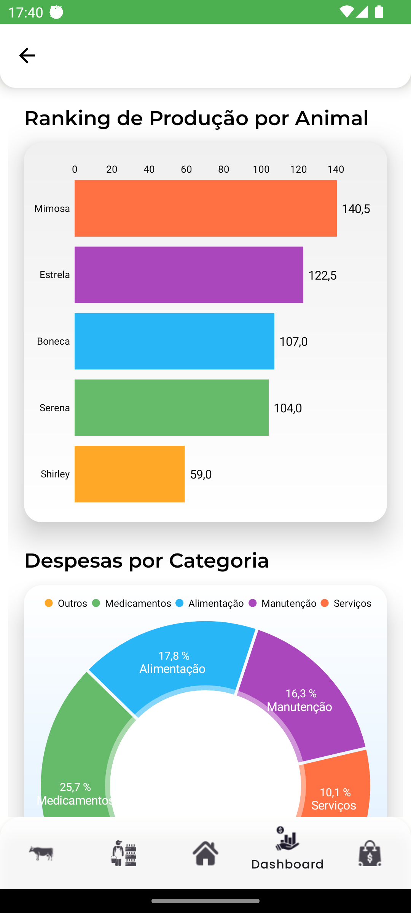
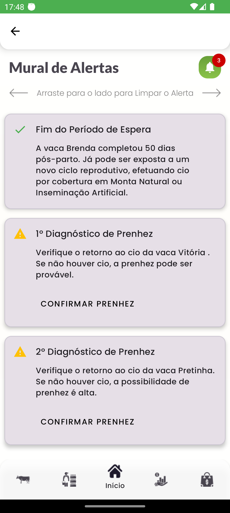
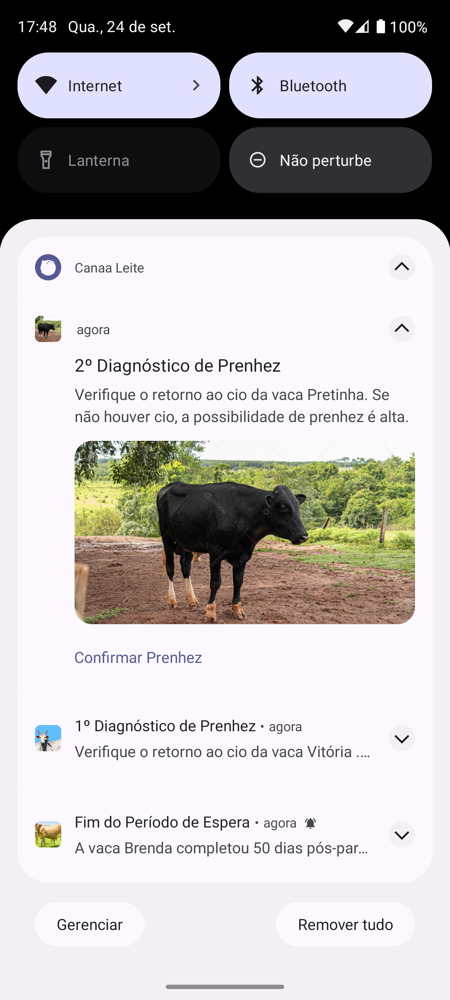
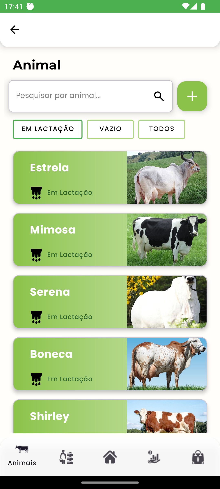
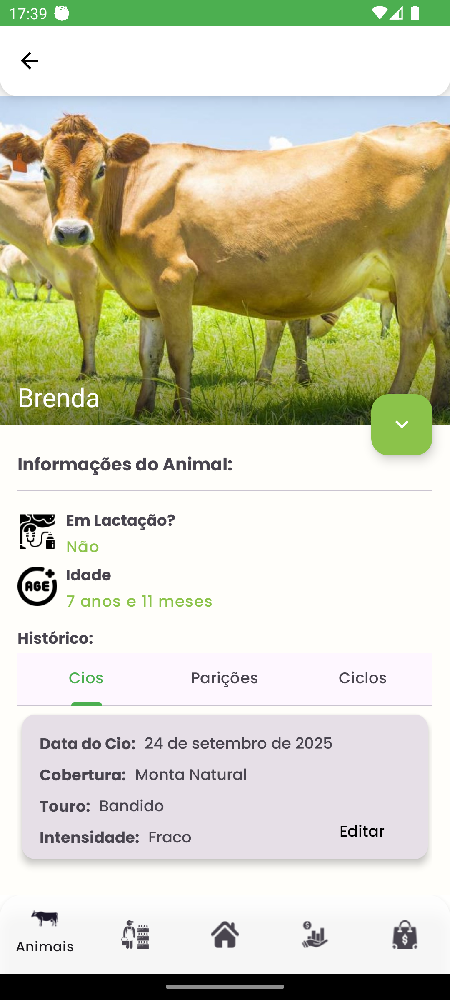
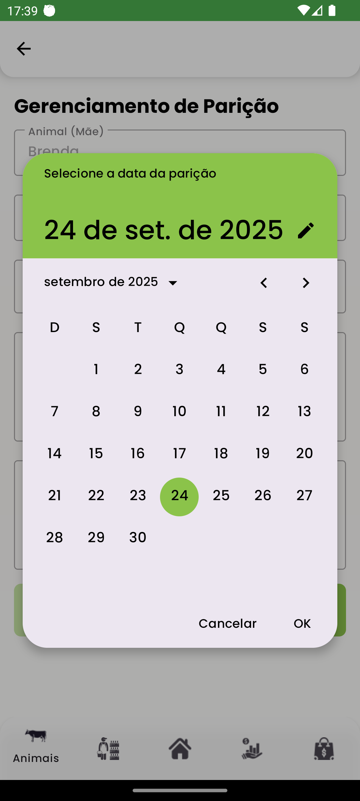
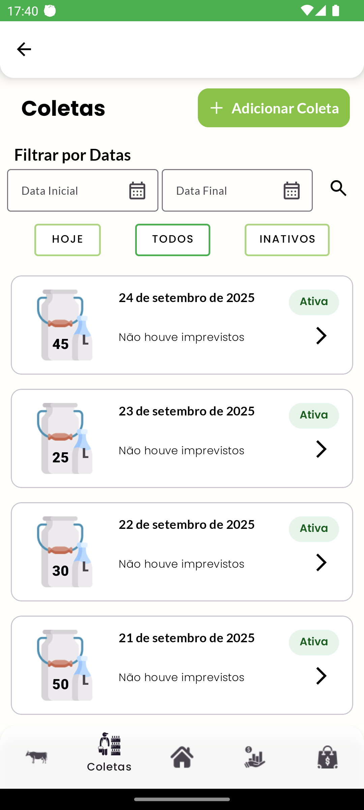
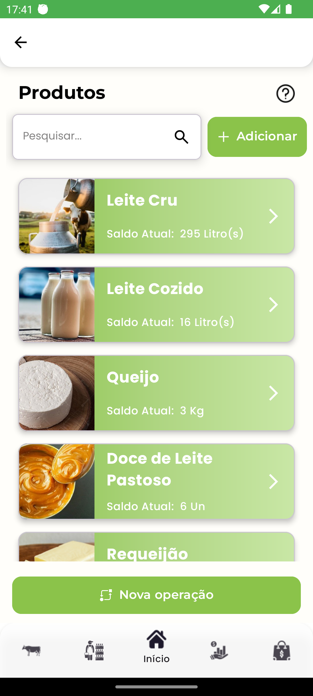
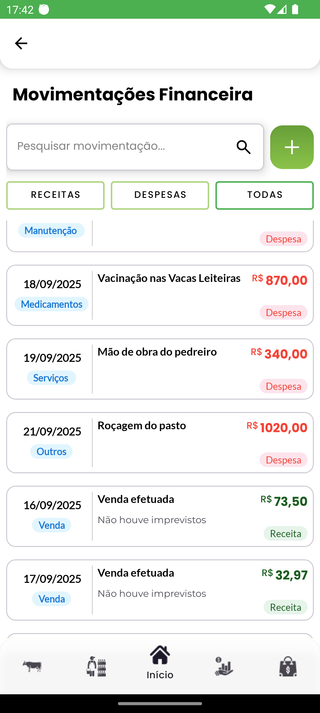

🐄 CanaãLeite: Gestão Inteligente para Pecuária Leiteira

O CanaaLeite é um aplicativo Android nativo, desenvolvido em Kotlin, que revoluciona a gestão de fazendas de gado de leite. Ele atua como um assistente completo para o produtor rural, integrando controles de rebanho, produção, finanças e o ciclo reprodutivo em uma única plataforma poderosa e fácil de usar.
✨ O Que Torna o CanaãLeite Inovador?
O grande diferencial do CanaaLeite é funcionar como um consultor veterinário virtual para o produtor que não tem acesso constante a um profissional. O app guia o usuário através do complexo ciclo reprodutivo das vacas, com o objetivo de alcançar a meta ideal de um bezerro por vaca por ano.
- Diagnóstico de Prenhez sem Veterinário: O sistema utiliza um método inovador baseado na observação do ciclo estral (cio). Ele alerta o produtor para verificar a ausência de cio em 21 e 42 dias após a cobertura, permitindo uma confirmação de prenhez com alta probabilidade, sem a necessidade de exames caros ou da presença de um veterinário.
- Sistema de Alertas Proativo: O app gera um mural de alertas inteligentes e coloridos (🟢 Hoje, 🟡 Próximos, 🔴 Atrasados) para todas as tarefas críticas do ciclo reprodutivo, como previsão de cio, data de secagem e previsão de parto.
- Gestão 360° da Fazenda: Além do controle reprodutivo, o CanaaLeite integra:
- Controle Financeiro: Gerencie despesas e receitas com dashboards visuais.
- Gestão de Estoque: Controle a produção de leite e a fabricação de derivados como queijos e iogurtes.
- Controle de Vendas: Registre vendas de leite e outros produtos, com gestão de clientes.
- Funcionalidade Offline-First: O aplicativo é 100% funcional sem conexão com a internet. Todos os dados são salvos localmente e sincronizados automaticamente com a nuvem (Firebase) assim que a conexão é restabelecida, garantindo que nenhuma informação seja perdida.
🖼️ Telas do Aplicativo

Tela Principal (Home)
|

Dashboard Financeiro
|

Mural de Alertas Inteligentes
|

Notificações de Alertas
|

Lista de Animais do Rebanho
|

Detalhes do Animal
|

Gerenciamento de Parição
|

Controle de Coletas de Leite
|

Gestão de Produtos e Estoque
|

Movimentações Financeiras
|
🛠️ Tecnologias e Arquitetura
- Linguagem: Kotlin - A linguagem oficial para o desenvolvimento Android.
- Arquitetura:
- Clean Architecture: Separação clara das responsabilidades em camadas (Data, Domain, Presentation).
- MVVM (Model-View-ViewModel): Padrão de arquitetura que promove a separação entre a lógica de apresentação e a UI.
- Jetpack Components:
- UI (Interface do Usuário):
- ViewBinding: Para acesso seguro às views.
- Material Design: Para uma interface moderna e intuitiva.
- MPAndroidChart: Para a criação de dashboards e gráficos.
- Backend e Sincronização:
🚀 Próximos Passos e Inovações Futuras
- Controle Genético e de Linhagem: Rastreamento de parentesco para auxiliar na seleção genética do rebanho.
- Gerenciamento por Lotes: Funcionalidade para agrupar animais em lotes, facilitando a gestão.
- Integrações Externas e Geolocalização: Integração com APIs de Clima/Tempo e uso de GPS/Mapas para otimizar a logística.
- Modernização da Interface: Migração gradual para Jetpack Compose.
- Estrutura de Dados Colaborativa: Refatoração do Firestore para uma estrutura baseada em "Organização", permitindo que múltiplos usuários gerenciem a mesma fazenda.
Danillo Teles Carneiro